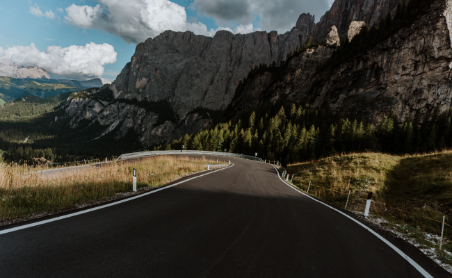
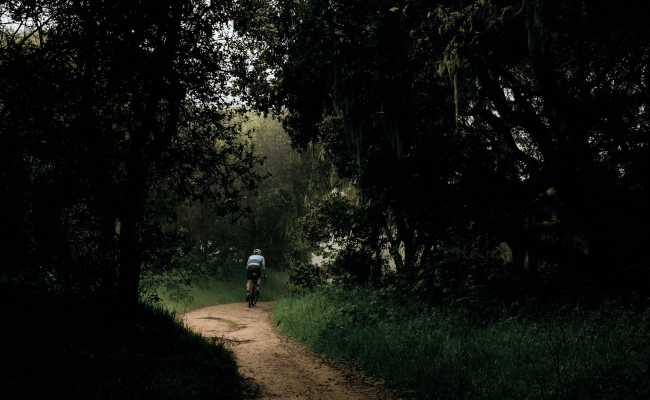

Шоссе, ТТ и Грэвел
Триатлонные старты, горные серпантины или грейвел заезды по живописным маршрутам – нужно только определиться с выбором велосипеда и отправиться в путь.
Cannondale Systemsix


Катайся много или мало, долго или коротко, как хочешь - но катайся
Шоссе
На шоссейном велосипеде можно ездить по асфальту на разных градиентах: будь то горы или равнины. Гонки проходят в командном пелотоне, но тренироваться можно и самостоятельно.

